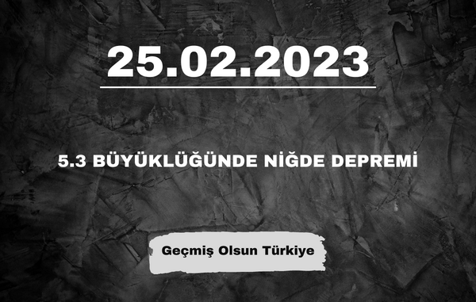
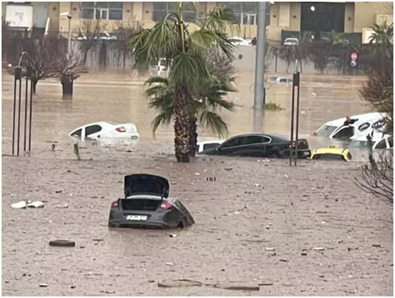
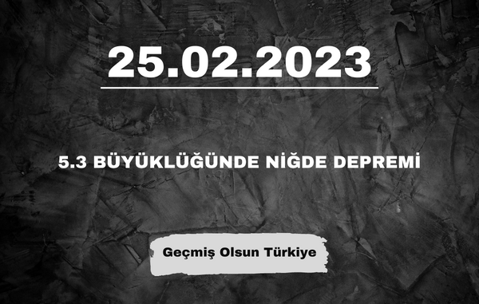
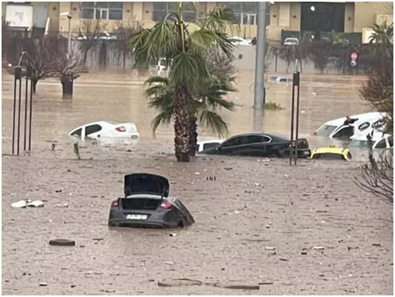

Cumhurbaşkanı Recep Tayyip Erdoğan, Brunei Darüsselam Sultanı Waddaulah ile ortak basın toplantısında açıklamalarda bulundu. Cumhurbaşkanı Erdoğan, “Yaşadığımız bu zor günlerde Brunei’nin göstermiş olduğu dayanışmayı asla unutmayacağız” dedi. Bu kapsamda iki ülke arasındaki “Milli Arşivleri Arasında İşbirliğiProtokolü”nü Devlet Arşivleri Başkanı Uğur Ünal ile Brunei Darusselam Gençlik ve Spor Bakanlığı Kültür İşlerinden Sorumlu Müsteşarı Yang MuliaPengiranHaji Mohammad Hasnan bin PengiranHaji Ali Hassan imzaladı. İmzaların atılmasının ardından iki lider ortak basın toplantısı düzenledi. Brunei Darusselam Sultanı Waddaulah ve heyetini Ankara’da misafir etmekten büyük bir memnuniyet duyduğunu belirten Erdoğan, Brunei Darusselam Sultanı Waddaulah’ın 2012’deki Türkiye ziyaretinin, devlet başkanı düzeyindeki ilki teşkil ettiğini hatırlattı.
Türkiye’nin gözü o toplantıdaydı! Son dakika bilgisine göre İYİ Parti, altılı masaya geri döndü! İYİ Parti lideri Meral Akşener’in Mansur Yavaş ve Ekrem İmamoğlu için ..Habere Git

2023 Yükseköğretim Kurumları Sınavı (2023-YKS), 17-18 Haziran 2023 tarihlerinde yapılacaktır. 17 Haziran 2023 tarihinde Temel Yeterlilik Testi (TYT), ..Habere Git
Instagram, mobile uygun ve kullanımı kolay bir platformdur. Hareket halindeyken bile kullanımı kolay oluşu, bilgiyi görsel üzerinden aktararak takibi kolaylaştırması ve tüm görselleri aynı ölçüde sunmasıyla ilgimizi çekiyor. İnsanların fotoğraf paylaşma tutkusunun bir sosyal mecra yaratacağını 2010 yılında fark eden Mark Zuckerberg,Kevin Systrom ve Mark Krieger isimli programcıların geliştirdiği Instagram’ı 21 Nisan 2012 yılında satın aldı. Instagram şu anda günde 40 milyon fotoğraf paylaşımı, saniyede ise 8600 beğeni ve 1000 yorum yapılan sosyal bir platform. Bu rakamlar her geçen gün yükseliyor. Kişisel kullanıcıların yanı sıra işletme hesaplarının da gün geçtikçe artması Instagram’ı her geçen gün daha popüler hale getiriyor. Instagram’ın bu kadar hızlı yayılmasının altında birçok sebep yatıyor. Peki Instagram bize ne gibi kolaylıklar sağlıyor? Sizin için birkaçını derledik. ..Haberin Devamı
Türkiye’nin gözü o toplantıdaydı! Son dakika bilgisine göre İYİ Parti, altılı masaya geri döndü! İYİ Parti lideri Meral Akşener’in Mansur Yavaş ve Ekrem İmamoğlu için ..Habere Git
2023 Yükseköğretim Kurumları Sınavı (2023-YKS), 17-18 Haziran 2023 tarihlerinde yapılacaktır. 17 Haziran 2023 tarihinde Temel Yeterlilik Testi (TYT), ..Habere Git
İletişim